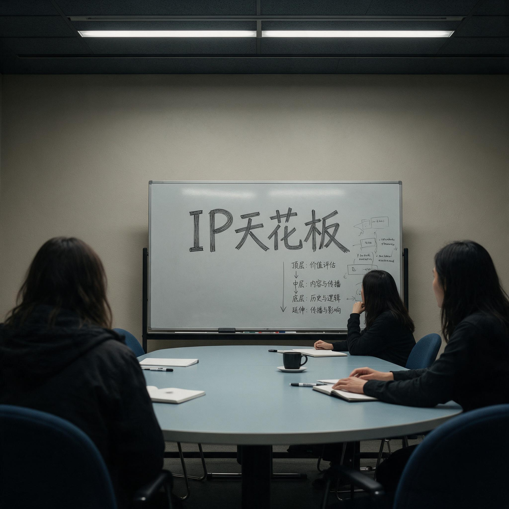

第 1 章
前作的影子
会议室的白板上，有人用马克笔写下了“IP天花板”四个字，每个笔画都用力到让白板微微凹陷。那是2019年11月的一个下午，杭州网易大厦B座的某个会议室里，《逆水寒》项目组的季度复盘会刚进行到第二个小时。主持会议的制作人叶弄舟没有站在白板前，他坐在长桌的一端，面前摊着一份运营数据报告，手指压在“月活跃用户环比下降7.2%”这行数字上。房间里沉默的时间大约持续了二十秒，然后他抬起头，说了一句后来被反复引用的话：“我们吃透了温瑞安的红利，现在红利开始吃我们了。”
这句话在当时的语境下并非危言耸听。《逆水寒》自2018年6月上线以来，首月流水突破十亿，注册用户迅速攀升至千万量级，在网易内部被视为继《梦幻西游》《大话西游》之后，公司在大型客户端游戏领域最成功的一次产品迭代。温瑞安原著《四大名捕》《说英雄谁是英雄》《逆水寒》等系列小说，从上世纪八十年代起积累的读者基础，加上电视剧改编的多次传播，为游戏提供了一个无需市场教育的故事框架和人物谱系。

玩家进入游戏之前，就已经知道谁是戚少商、谁是顾惜朝、谁是铁手，知道“逆水寒”三个字背后那场千里追杀的江湖恩怨。这种认知成本的优势，是任何原创世界观都难以企及的。
但优势的背面，在游戏运营进入第十八个季度时开始显形。复盘会上呈现的数据曲线并不剧烈，却呈现出一种稳定的下行趋势。新用户获取成本从2018年第四季度的平均四十二元，上升到2019年第三季度的七十一元。用户首月留存率从百分之六十三下滑到百分之五十一。
更让运营团队感到压力的是，玩家社区中对“剧情疲劳”的讨论帖在过去半年里增长了近三倍。一位来自用户体验研究部门的分析师在报告中写道：“玩家不再追问‘接下来会发生什么’，而是开始问‘这和我想的江湖有什么不同’。”这个判断被叶弄舟用红笔圈了出来，在复盘会前一天晚上发到了核心制作群的微信群里。
网易在历史题材游戏领域的成功，本质上建立在对成熟武侠IP的深度依赖之上。这个判断不是事后总结，而是当事人在那个时间节点上已经开始面对的现实。
如果要追溯这条路径的形成，需要回到2015年。那一年，网易游戏事业群内部完成了一次重要的战略调整。在移动游戏市场高速增长的大背景下，公司决定在大型客户端网络游戏领域保持投入，但方向从早期的自研IP转向外部成熟IP的深度改编。这个转向的逻辑很清晰：端游研发周期长、成本高、用户获取难度大，绑定一个已经经过市场验证的文学或影视IP，可以在项目启动阶段就锁定一部分核心用户。
武侠题材因其天然的视觉表现空间、战斗系统和社交结构，成为IP改编的首选赛道。2015年至2018年间，网易在武侠IP改编领域构建了一个完整的产品矩阵。这个矩阵的核心是《逆水寒》，但并非孤例。
更早的《新倩女幽魂》改编自聊斋，虽然不算严格意义上的武侠，但其对古典文本的视觉化路径为后来者积累了经验。《天下3》虽为自研IP，但其叙事框架大量吸收了《山海经》的神话体系。
到了《逆水寒》，这套方法论已经相当成熟：拿到IP授权后，核心制作团队会花三到六个月时间，将原著中的人物关系、门派设定、武功体系和关键情节节点拆解成可游戏化的模块，然后由美术团队负责将文字描述转化为视觉资产，由策划团队设计与之匹配的战斗、社交和经济系统。这套流程的工业化程度在《逆水寒》项目上达到了一个高峰。温瑞安原著提供了超过两百个有名有姓的角色、十数个主要门派、以及横跨北宋末年至南宋初年的完整历史背景。
美术团队在项目立项后的两年里，建立了一个包含超过三千个模型文件的宋代市井资产库。其中有一个编号为“SCENE_SONG_URBAN_047”的模型文件，被反复用于汴京街区的多个场景——那是一组沿街店铺的立面组合，从瓦舍的檐角弧度到酒旗的悬挂高度，都参考了《清明上河图》和张择端同时期的界画作品。这个文件在整个项目周期内被调用了一百七十余次，成为美术资产复用的一个典型样本。
这种资产积累方式，让《逆水寒》在视觉呈现上达到了当时国产端游的顶尖水平。
玩家进入汴京城时，可以看到虹桥上车水马龙、河道中漕船往来、街市间商铺林立的景象。这些场景不是简单的贴图堆砌，而是基于对宋代城市空间结构的系统研究。美术团队查阅了《东京梦华录》《营造法式》等文献，甚至专门派人到开封、杭州的博物馆拍摄宋代建筑构件的实物照片，作为建模参考。这种投入的程度，在当时的中国游戏行业中，是相当罕见的。但问题也恰恰出在这里。
所有这些视觉资产、这些经过精心还原的宋代市井场景，都被绑定在温瑞安的江湖叙事之上。玩家走在汴京的街道上，看到的不是北宋市民的日常生活，而是戚少商和顾惜朝的恩怨纠葛展开的舞台。
场景是历史的，但故事是传奇的；建筑是考据的，但人物是类型化的。这种张力在游戏上线初期并不明显——新鲜感足以掩盖叙事结构上的裂缝。但当玩家在同一个江湖里行走了十八个月之后，裂缝开始扩大。
2019年第四季度的用户调研中，出现了一个让制作团队意外的数据点：在“您最希望在游戏中看到的内容”这道开放题中，“更真实的历史事件”这个选项的提及率从年初的百分之八上升到年底的百分之十七，而“更多原著剧情”从百分之二十三下降到百分之十四。两条曲线在九月份交叉，之后差距持续拉大。负责用户研究的分析师在报告附录中加了一句注释：“这个趋势如果持续，意味着我们的核心内容策略需要重新评估。”
叶弄舟在那次复盘会上把这份报告读了两遍。第一遍是默读，第二遍是逐段念出来，让在座的十几位核心成员都听到。念到那句注释时，他停下来，看了一眼坐在斜对面的主策划陆离。“老陆，你怎么看？”
陆离在《逆水寒》项目组里以直言著称。他没有绕弯子：“我们的玩家长大了。或者说，我们教会了他们什么是好的历史场景，但他们想要的不只是场景了。”他顿了顿，补充道，“他们想要历史本身。”
这个判断在会议室里引发了一阵低声讨论。陆离说的“教会”并非夸张——《逆水寒》在宋代市井还原上的投入，确实培养了一批对历史细节高度敏感的玩家。这些玩家会在论坛上讨论游戏中某件兵器的形制是否符合宋代规制，会指出某处建筑构件的年代错误，会引用《武经总要》来论证某种阵法的合理性。
这种玩家群体的出现，本身是游戏在历史还原度上投入的成果。但当这批玩家的历史兴趣被激发出来之后，他们开始不满足于在一个虚构的江湖故事里寻找历史碎片。他们想要一个真正以历史为主轴的游戏世界。
这种需求的变化，与《逆水寒》本身的产品结构之间存在根本性的矛盾。《逆水寒》的核心叙事框架是温瑞安的武侠小说，这意味着无论制作组如何在细节上还原历史，故事的主线永远围绕江湖恩怨、门派争斗、武功秘籍这些武侠类型元素展开。游戏中的历史事件——比如宋金战争、朝廷党争——始终是作为背景板存在的，是推动江湖情节的工具，而非叙事的主体。当玩家开始渴望更严肃的历史表达时，这个结构就变成了桎梏。
多人玩法与单人叙事之间的矛盾，在这个阶段也变得更加突出。《逆水寒》本质上是一款大型多人在线角色扮演游戏，其核心玩法围绕帮会战、副本、装备养成等社交和竞争机制展开。
但温瑞安原著提供的是一个以个人命运为主线的叙事结构——戚少商的逃亡、顾惜朝的背叛、铁手的抉择，这些都是高度个人化的故事。在多人同时在线的游戏环境中，每个玩家都是“主角”，但叙事资源只能集中在少数关键角色身上。
这种张力在游戏上线初期被新鲜感和社交乐趣掩盖，但随着玩家对剧情深度的要求提高，矛盾逐渐暴露。
2019年底的一次内部讨论会上，叙事设计组的负责人陈星汉提出了一个尖锐的问题：“我们在做一个让一万人同时在线扮演戚少商的游戏，但原著里只有一个戚少商。这一万个人里，九千九百九十九个注定是群演。”这个问题直指IP改编游戏的结构性困境——文学IP的叙事能量集中在少数核心角色身上，而MMO的游戏结构要求每个玩家都能获得主角体验。
两者之间的裂缝，靠增加支线剧情和副本叙事只能暂时弥合，无法根本解决。这些矛盾在《逆水寒》运营中后期的数据中得到了印证。
用户流失最严重的节点，往往不是玩法更新缓慢的时期，而是主线剧情更新后的第二到第三周——玩家在消耗完新的剧情内容后，迅速回落到以社交和装备驱动为主的日常循环中。剧情成为了一种“消耗品”，而非游戏世界持续运转的引擎。
这种模式在短期运营中是可行的，但长期来看，它导致了叙事驱动型玩家的持续流失。
到了2020年上半年，网易游戏事业群内部对历史题材赛道的讨论进入了一个新的阶段。《逆水寒》仍然是公司的核心产品之一，其营收贡献和用户规模在端游领域仍居前列。但项目组核心成员在多次复盘会上反复碰撞出的共识是：这条赛道正在收窄。IP红利在第一个完整运营周期内被充分释放之后，后续的增长越来越依赖于运营活动和版本更新，而非产品本身的叙事吸引力。
更关键的是，市场上出现了新的信号——一些以原创世界观构建的历史题材游戏，虽然体量远小于《逆水寒》，但在核心用户群中获得了极高的口碑和忠诚度。
2020年4月，网易游戏事业群召开了一次跨项目的历史题材产品线规划会。参加者不仅包括《逆水寒》的核心制作团队，还有来自《新倩女幽魂》《天下3》等项目的负责人，以及公司战略研究部门的相关人员。
会议的议题很明确：网易在历史题材游戏领域的下一个产品，应该走什么方向？会议持续了整整一天。
上午的议程主要是各项目组的经验分享和数据呈现。《逆水寒》团队提供了一份详尽的运营数据报告，涵盖了从用户获取成本、留存率、付费转化到社区活跃度的完整指标。报告的核心结论是：IP改编产品在首年运营中具有显著的用户获取优势，但这个优势在第二年开始递减，到第三年基本消失。此后产品的竞争力回归到游戏品质本身——美术、玩法、叙事、社交体系的综合实力。下午的讨论转向了更宏观的议题。
战略研究部门的一位分析师展示了一份全球游戏市场的趋势报告，其中特别标注了一个现象：在PC和主机游戏领域，过去三年里获得年度最佳游戏提名的作品中，有超过百分之六十采用了原创世界观。而在中国市场，这一比例不到百分之二十。报告指出，中国游戏公司在原创世界观构建上的能力短板，正在成为制约产品升级和全球化的关键瓶颈。
这份报告引发了激烈的讨论。有人指出，中国市场的特殊性在于，玩家对熟悉的文化符号有更强的认同感，IP改编恰恰是利用了这种认同感。但也有人反驳说，这种认同感正在代际更替中减弱——九零后和零零后玩家对金庸、古龙、温瑞安的熟悉程度，远低于他们的父辈。如果网易继续深度依赖这些IP，未来可能面临用户认知基础不断收窄的风险。叶弄舟在讨论中做了一段较长的发言。
他没有直接评价报告的内容，而是回顾了《逆水寒》项目组在过去两年里遇到的一个具体问题：每次版本更新设计新剧情时，编剧团队都要在温瑞安原著的框架内寻找可用的素材，但原著的情节线和人物关系是有限的。到了第三个资料片，他们不得不开始大量创作原创剧情，但这些原创剧情又必须符合“温瑞安风格”，不能脱离原著设定的江湖逻辑。“我们实际上在做一件自相矛盾的事，”叶弄舟说，“我们想讲自己的故事，但又必须让它听起来像是别人讲的故事。”
这段话在会议室里引起了一阵沉默。然后，有人问了一个问题：“如果我们下一款历史游戏，不讲别人的故事呢？”
提问的人是网易游戏事业群的高级副总裁王怡。他一直坐在会议桌的另一端，大部分时间在听，偶尔记几笔。这个问题问得很轻，但整个会议室安静了下来。“不讲别人的故事，意味着没有IP，”陆离接过话头，“没有温瑞安，没有金庸，没有古龙。玩家进入游戏之前，对我们的世界一无所知。我们要从零开始告诉他们，这个世界是什么、谁住在里面、发生了什么、为什么值得关心。”
“代价呢？”王怡问。“用户获取成本会很高，”叶弄舟回答，“首年运营的压力会很大。我们需要用产品本身的品质去建立信任，而不是靠IP的熟悉感去降低门槛。”
“收益呢？”
叶弄舟没有立刻回答。他看了一眼投影屏幕上那份全球趋势报告，然后说：“如果我们做成了，这个产品就是它自己的IP。它的世界观属于我们，不属于任何一个小说家。我们可以在这个世界里讲任何我们想讲的故事，不受任何原著框架的限制。而且——”他停顿了一下，“而且这个世界的深度和严肃性，可以超过任何一部武侠小说所能提供的。”
这个回答指向了一个关键的区别。武侠小说，无论其文学价值多高，本质上是一种类型文学，其叙事逻辑受制于“江湖”这个虚构社会的基本规则——武功高低决定权力结构、个人恩怨驱动情节发展、历史事件是背景而非主题。但一个真正以历史为主轴的游戏世界，可以处理更复杂的议题：族群关系、制度变迁、技术革命、文化冲突。这些议题的叙事深度和广度，远超武侠类型的承载能力。王怡没有当场表态。会议结束时，他只说了一句：“回去之后，有兴趣的人可以开始做一些初步的构想。不用太正式，先想清楚我们要做什么、为什么做、能不能做。”
这句话在组织程序上不算一个正式的项目启动指令，但它打开了一扇门。
接下来的几周里，《逆水寒》核心制作团队中的几位关键成员开始在工作之余讨论这个“下一款历史游戏”的可能性。这些讨论没有会议纪要，没有正式流程，往往发生在午休时间的茶水间、下班后的办公室、或者微信群里深夜的语音通话中。
讨论的焦点逐渐收敛到几个核心问题上。第一，题材选择。如果要做一个没有IP依赖的历史游戏，选择哪个历史时期？这个时期必须有足够的叙事资源——复杂的人物关系、激烈的事件冲突、丰富的视觉素材，以及最重要的，与当代玩家能产生情感联结的精神内核。
第二，叙事结构。如果不再依赖一个既定的故事框架，游戏如何组织叙事？是用一个线性主线贯穿，还是采用更开放的碎片化叙事？
第三，玩法与叙事的整合。如何避免《逆水寒》中出现的那种叙事与多人玩法之间的结构性矛盾？这些问题在最初的讨论中没有明确的答案。
但有一个共识在反复碰撞中逐渐成形：下一款历史游戏，必须讲一个没有小说、没有电视剧、没有粉丝基础的故事。这个共识最初只是口头上的表达，出现在各种非正式场合的讨论中。
但到了2020年5月中旬，它开始从口头走向书面。5月17日，陆离在深夜给叶弄舟发了一封邮件。邮件的标题是“关于下一款历史游戏的初步构想”，正文不到一千字，没有附件，没有图表。
邮件的第一段写道：“如果我们决定做一个真正以历史为主轴的游戏，我建议考虑一个在中国历史上反复出现、但从未被游戏充分表达的主题——‘边界’。不是地理意义上的边界，而是文明、族群、记忆的边界。在这个边界上，没有绝对的正义与邪恶，只有不同立场的人在做他们认为正确的事。”
这封邮件没有指定具体的历史时期，没有提出详细的玩法设计，甚至没有使用“燕云十六州”这个后来成为产品名称的词汇。但它勾勒出了一个方向——一个关于边界、关于选择、关于历史复杂性的游戏世界。这个方向与《逆水寒》所代表的武侠江湖叙事形成了明确的差异。叶弄舟在第二天早上回复了邮件。回复只有一句话：“继续写，写清楚。”
这句简短的回复，在网易游戏事业群的内部语境中，意味着一个构想开始从个人兴趣进入了“值得认真对待”的阶段。在此后的几周里，陆离和他的同事们开始在工作之余，将那些在茶水间和微信群里讨论的碎片，逐步整理成一份更加系统的内部提案。这份提案的起草过程并不顺利。
最大的困难在于，团队中的每个人都在用《逆水寒》的思维方式来想象新项目。当讨论到叙事结构时，有人会下意识地说“可以像戚少商那条线一样”——然后意识到新项目没有戚少商。当讨论到美术风格时，有人会打开《逆水寒》的场景截图作为参考——然后意识到新项目不需要温瑞安笔下的江湖。
每一次这样的时刻，都在提醒团队：他们正在试图走出一个被IP定义的舒适区，而舒适区之外，每一步都是未知。这种路径依赖的顽固程度，超出了参与者最初的预期。《逆水寒》不仅为团队提供了技术积累和美术资产，更在深层次上塑造了一种思维惯性——如何理解“历史游戏”这个概念本身。
网易在2015年的那次战略调整，并非凭空发生。它的前提是一组更早的失败案例。2012年至2014年间，网易游戏事业群先后立项了至少三款以原创世界观构建的大型客户端游戏，题材涵盖东方玄幻、历史战争和科幻末世。这三个项目无一例外，都在研发中期遭遇了方向性困境。事后复盘时，一个反复被提及的问题是：当玩家对游戏世界没有任何预先认知时，项目组需要用大量前期资源去建立世界观的基本框架——种族设定、势力分布、历史年表、核心冲突——而这些工作在IP改编项目中几乎可以完全省略。
更致命的是，即便投入了这些资源，最终呈现的效果仍然难以在短时间内让玩家建立起情感联结。一位参与过其中两个项目的主策划在2014年底的总结报告中写道：“我们试图在三个月内教会玩家一个他们从未听说过的世界，而隔壁项目组只需要告诉玩家‘这是金庸的江湖’，就完成了同样的事。”
这份报告在当时的决策层中产生了深远影响。2015年初，网易游戏事业群在年度战略规划会上正式确立了“以成熟IP为核心”的端游开发路线。会议纪要中有一条被加粗标注的结论：“在大型客户端游戏领域，原创世界观项目的用户获取成本是IP改编项目的二点三倍，首年留存率低十一个百分点。在当前市场环境下，IP改编是更理性的商业选择。”这条结论的背后，是三个原创项目的沉没成本和数十位核心研发人员两年时间的投入。它不是一个理论推演，而是用真金白银换来的教训。
因此，当《逆水寒》在2015年正式立项时，选择温瑞安IP不是一个需要讨论的问题——它几乎是唯一符合所有条件的选项。温瑞安的作品在华人世界拥有广泛的读者基础，其“四大名捕”系列在影视改编上的成功已经验证了跨媒介传播的潜力，而北宋末年的历史背景又为美术团队提供了丰富的视觉素材。更重要的是，温瑞安的武侠世界观与金庸、古龙相比，更强调官场与江湖的互动、制度与个人的冲突，这为游戏设计提供了更大的叙事空间。这些优势在立项报告中被逐一列出，构成了一个几乎无懈可击的商业逻辑。
但这份立项报告中没有提及的是，选择温瑞安IP也意味着接受了它的全部限制。温瑞安的小说体系虽然庞大，但其核心情节线和人物关系在《逆水寒》《四大名捕》《说英雄谁是英雄》三部主要作品中已经基本展开完毕。游戏如果要长期运营，就必须在原著的缝隙中寻找叙事空间，或者在原著之外创造新的内容——而后者在法律和商业层面都受到授权协议的限制。2016年初，项目组在与版权方的一次沟通中，就曾因为一个原创剧情方向的问题陷入僵局。版权方认为某个新设计的门派设定“偏离了温瑞安武侠世界的基本风格”，要求修改。
在IP改编的框架内，“历史”始终是一个被武侠滤镜折射后的产物。它可以是考据精确的服装和建筑，可以是符合时代背景的官职体系和地理名称，但核心叙事永远围绕侠客、门派、秘籍和恩怨展开。历史的真正驱动力——经济结构的变迁、族群关系的演化、制度与技术的互动——在武侠叙事中只能以简化或象征的形式出现。
当团队试图跳出这个框架时，他们发现自己缺乏一套成熟的方法论。如何将一个历史时期转化为可玩的游戏世界，而不依赖侠客成长的故事模板？如何在多人同时在线的环境中，让每个玩家都能与历史产生有意义的互动，而不是沦为重大事件的旁观者？这些问题在《逆水寒》的开发经验中找不到现成的答案。2020年6月的一个晚上，陆离在办公室里加班到凌晨。
他的电脑屏幕上开着两个窗口：左边是那封关于“边界”主题的邮件，右边是一份空白的文档，标题栏里写着“新项目初步构想_v0.1”。光标在标题下方闪烁了将近十分钟，然后他敲下了第一行字：“本项目旨在探索一种不同于IP改编的历史游戏路径，以原创世界观构建为核心，以严肃历史叙事为基底，尝试在大型多人在线游戏框架内实现深度单人叙事体验。”
这句话写得谨慎而克制，每一个限定词都经过了反复斟酌。它没有承诺商业成功，没有设定用户规模目标，甚至没有确定具体的历史时期。
但它清晰地表达了一个意图：网易在历史题材游戏领域的下一个产品，将不再绑在外部IP的绳索上。它必须自己成为绳索的编织者。这份v0.1版本的构想文档，在接下来的几天里被发送给了叶弄舟和另外两位核心制作人。文档的末尾留了一个待填的空格：“建议题材：______”。在这个空格被填上之前，这份提案只是一个方向性的声明。
但它已经足够清晰地传递出一个信号——在《逆水寒》验证了市场与技术路径之后，在IP红利触及天花板之后，在玩家开始渴望更严肃的历史表达之后，网易历史题材游戏的下一个章节，必须从原创开始。空格何时被填上，填上的是什么，那是另一个故事的开端。
但在2020年6月的那个凌晨，当陆离保存文档、关上电脑、走出空无一人的办公室时，一个共识已经完成了从复盘会上的口头碰撞到一份内部提案的转化。这个转化本身，就是后来一切选择的起点。
这份文档最终指向了一个具体的题材选择——五代十国时期割让给契丹的燕云十六州。这个选择并非偶然：它既是一个地理与文明的真实边界，也承载着后周世宗北伐前命王朴编创“十六音律准”的文化隐喻。
正如后来Everstone工作室负责人Beralt Lyu所描绘的，他们希望打造一个能让玩家深度沉浸于武打主题的世界，其战斗系统与市面上传统的武侠游戏截然不同，而开放世界体验则充满了情感高潮——探索按情感梯度与层级分层构建：基础层由小型兴趣点组成，下一层包含更广阔的区域及中型谜题，顶层则以主要区域首领为核心内容。此探索机制与武侠沉浸感紧密相连，其目标是透过与这个世界的互动，让玩家感受到自己如同一位英雄——一位侠客。武术动作指导董瑋受邀协助动作设计，为这个从《逆水寒》影子中走出的新项目注入了截然不同的动作基因。